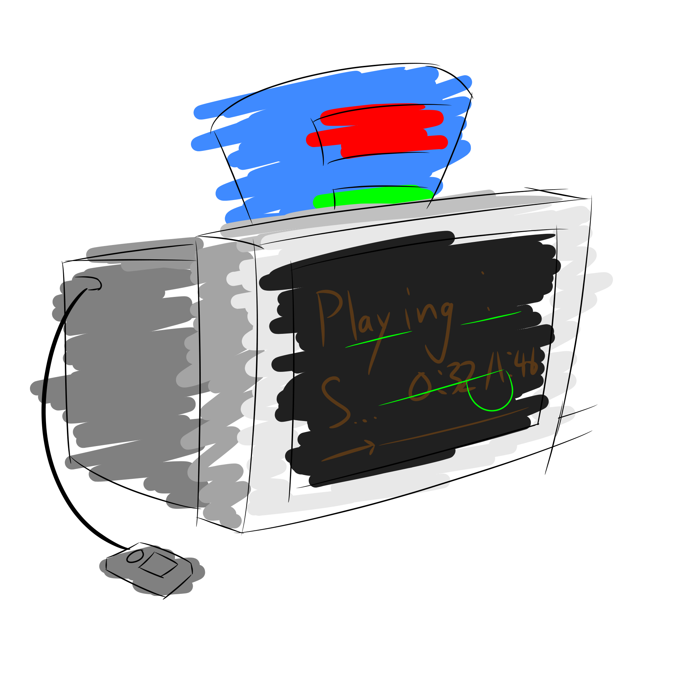

Listen to my music
Some are better than the others

I make music! I started back in 2020, the year of the pandemic; it wasn't really because of it, but I still learnt it that year.
Funnily enough, I can't really remember why I decided to learn this niche skill, maybe I just wanted to do what the others did?
Though, I have to thank one of my teachers (initials E. W., not telling you more), who, despite only teaching me for one year, made the most of that. I kinda miss him.
Oh yeah also here's my soundcloud and bandcamp
Music I like (Title - Artist)
- Tenebre Rosso Sangue - Keygen Church
- Space Song - Beach House
- Altars of Apostay + Hall of Sacreligious Remains - Heaven Pierce Her
- Deep Blue - Heaven Pierce Her
- Bohemian Rhapsody - Queen
- Virtual Insanity - Jamiroquai
- Yona Yona Dance - 和田アキ子
- Lagtrain - 稲葉曇
- Flyday Chinatown - Yasuha
- My Favorite Things - John Coltrane
- My Favorite Things - The Sound of Music (Comp. Richard Rodgers, Lyr. Oscar Hammerstein II, Published by Williamson Music in 1959) (You can smell the fancy on this one)
- My Favorite Things - Yoko Kanno
- That's Life - Frank Sinatra
- Fly Me to the Moon - Frank Sinatra
- Fly Me to the Moon - Jung Jae-il, sung by Joo Won Shin
- Giant Steps - John Coltrane
- The Fragrance of Dark Coffee - Noriyuki Iwadare
- 強風オールバック - Yukopi
- Airpod Shotty (Remix) - Cameron Sanderson?
- String Theocracy - Mili
- Fly, My Wings - Mili
- Between Two Worlds - Mili
- Iron Lotus - Mili
- Eek! - Surasshu
- Rubber Human - Mili
- 幾年月 - Mili
-
world.execute(me) - Mili - Galahad 1 and Scientific Witchcraft - Mili
- Nine Point Eight - Mili (Haven't actually heard this song, only incl. cuz String Harmony)
- this song is not a metaphor - Brian David Gilbert
- Not the Right Questions! - Me :P
- The World Looks White + The World Looks Red - Heaven Pierce Her
- The Reason Why - Ayasa
- Merry Go Round of Life - Joe Hisaishi
- Piano Sonata No.8 “Pathétique” in C minor, Op. 13, 2nd Movement : Adagio cantabile - Ludwig van Beethoven
- Goodbye to a World - Porter Robinson
- 大正浪漫 - Yoasobi
- 群青 - Yoasobi
- たぶん - Yoasobi
- ハルジオン - Yoasobi
- 幽霊東京 - Yoasobi
- 夜に駆ける - Yoasobi
- アンコール - Yoasobi
- Skies Forever Blue - Itoki Hana
- And maybe more...